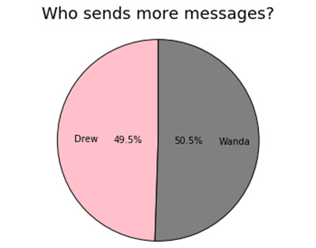
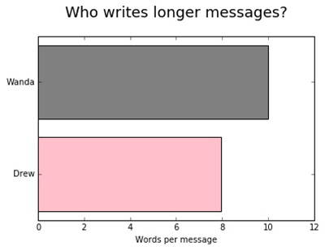
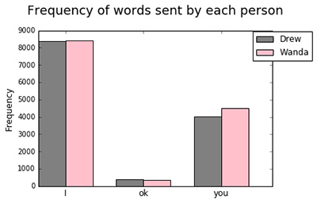
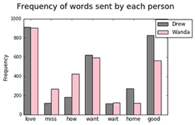
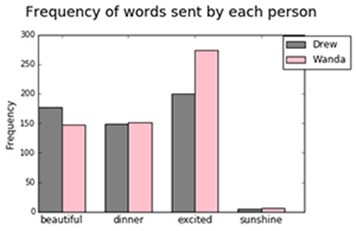
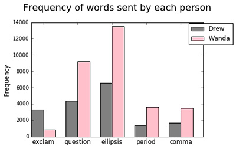

The Love Texts project will allow participants to upload their message histories along with some basic demographic information and receive an infographic highlighting features of their relationship.
The goal is to help texters visualize their messaging behavior and understand the role of text messaging in their relationships. Texters will be able to customize some parts of their results (i.e., identify key words, terms of endearment, etc.). In exchange, the messages will be used for research on the role of text messaging in building relationships and establishing intimacy.
The motivation for this project comes from one conversation in the Bilingual Youth Texts Corpus. This conversation spans the first three months of a relationship. Together, they send nearly 200 messages a day to each other. Though they live in the same city, they are only able to see each other once a week. Yet text messaging allows them to stay in nearly constant contact . Discourse analysis of this conversation has revealed the small yet important ways that they are building intimacy and trust.
Some key metrics that have been identified are the frequency and length of messages, the number of mistakes, textisms, and key words such as "love", "like", and "you", and the time between messages. The messages will NEVER be made public and will be kept on a password protected folder in an encrypted file.
This project is still in development, so if there is a metric you would love to see, please contact me. A prototype is expected in December, 2016. Sign up below if you would like to be notified of developments in this project.
Wanda and Drew have been together for almost 3 years. They donated 38,166 messages going back one year, eight months. During the course of this time period, they had three major relationship events: they moved in together, they went on vacation together, and established a domestic partnership. They live in New York City and are in their late 20's and early 30's. Both are employed, and they do not have children.
Wanda sends slightly more messages (50.5%) than Drew does.

Wanda also writes more words per message (10) than Drew (7.9)


The most common words in their text messages were identified (I, you, ok). They use these at about the same rate.

However, they do not use the "love words" and interrogatives at the same rate. Wanda says "miss" and "how" more often than Drew does, but Drew says "home" and "good" more often than Wanda. Wanda probably asks Drew more stative questions (i.e., "How are you?" "How was it?", etc.)

Wanda and Drew contributed some words they were interested in. They wanted to know who said "beautiful", "dinner", "excited", and "sunshine" more often. Turns out they don't say "sunshine" as often as they thought, and Drew says "beautiful" more than Wanda, but Wanda says "excited" more often than Drew.

Finally, they use punctuation very differently, Drew sends more exclamation points, though Wanda uses more punctuation overall. This type of difference has been consistent in similar conversations - texters pick up each others' vocabulary, but don't pick up their punctuation or laughter.
More metrics are in development, including time between messages, average response time, and other metrics of frequency, time, and delay.